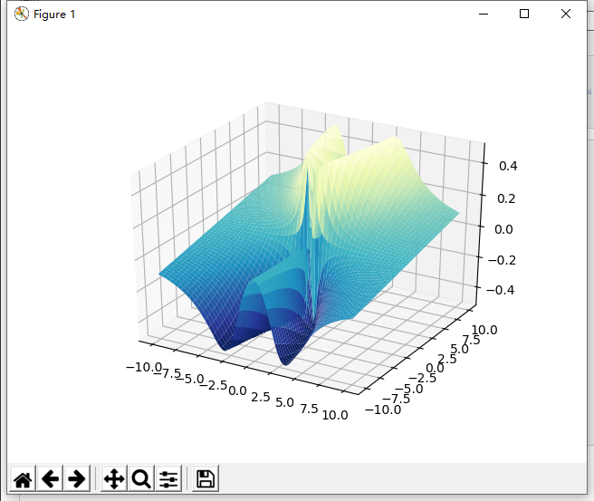
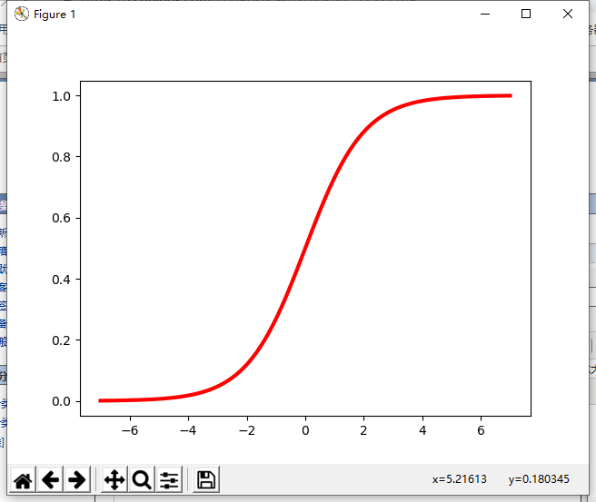

函数如下：
z = x^2 * y / (x^4 +y^2)
代码如下：
import numpy as np
import matplotlib.pyplot as plt
import mpl_toolkits.mplot3d
from matplotlib import cm
fig = plt.figure()
ax = fig.add_subplot(111, projection='3d')
x = np.linspace(-10, 10, 100)
y = np.linspace(-10, 10, 100)
# print(x, y)
X, Y = np.meshgrid(x, y)
Z = (X ** 2) * Y / (X ** 4 + Y ** 2)
ax.plot_surface(X, Y, Z, cmap=plt.cm.YlGnBu_r)
plt.show()图像：

2. sigmoid函数的绘制
y = 1 / (1 + e^x)
import numpy as np
import matplotlib.pyplot as plt
np.set_printoptions(suppress=True)
x = np.linspace(-7, 7, 101)
y = 1/ (1 + np.exp(-x))
plt.plot(x, y, 'r-', lw=3)
plt.show()